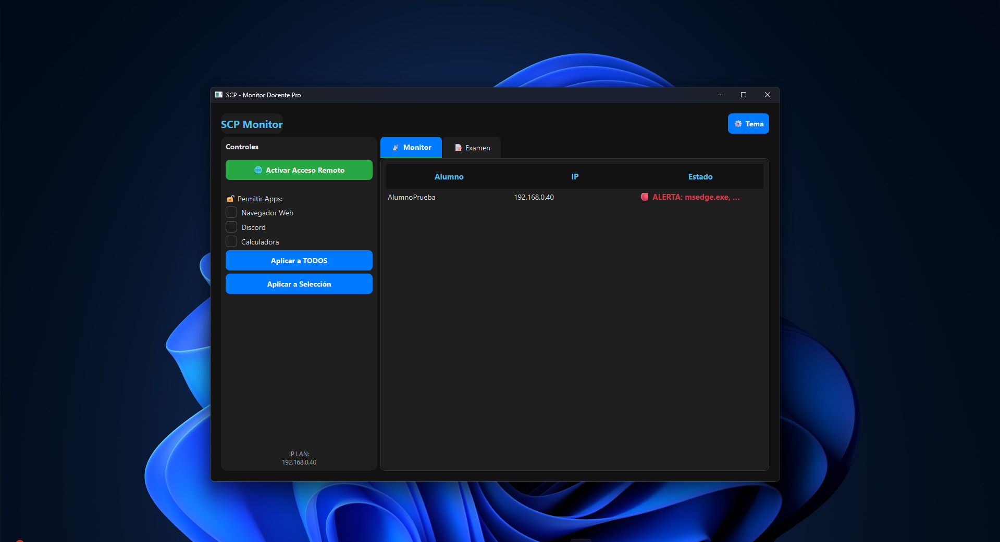

App SCP (En Desarrollo)
Aplicación de escritorio que controla procesos en ejecución de clientes conectados a un servidor, actualmente en fase de construcción ALPHA.
Hola, soy Nicolas. Actualmente curso el 3er año de Ingeniería en Sistemas. Me apasiona la tecnología y cómo esta puede resolver problemas complejos. Tengo un perfil híbrido con experiencia en soporte técnico, pero mi foco actual está en el desarrollo de software y la administración de sistemas.
Siempre estoy buscando aprender nuevas tecnologías, desde optimización de algoritmos en C++ hasta despliegue de modelos de Machine Learning.
Aplicación de escritorio que controla procesos en ejecución de clientes conectados a un servidor, actualmente en fase de construcción ALPHA.

Repositorio central de trabajos prácticos y laboratorios académicos. Enfoque en sintaxis, semántica y estructuras de datos.

Proyectos de análisis exploratorio y modelos predictivos (Machine Learning) desarrollados con Python, Pandas y Scikit-learn.